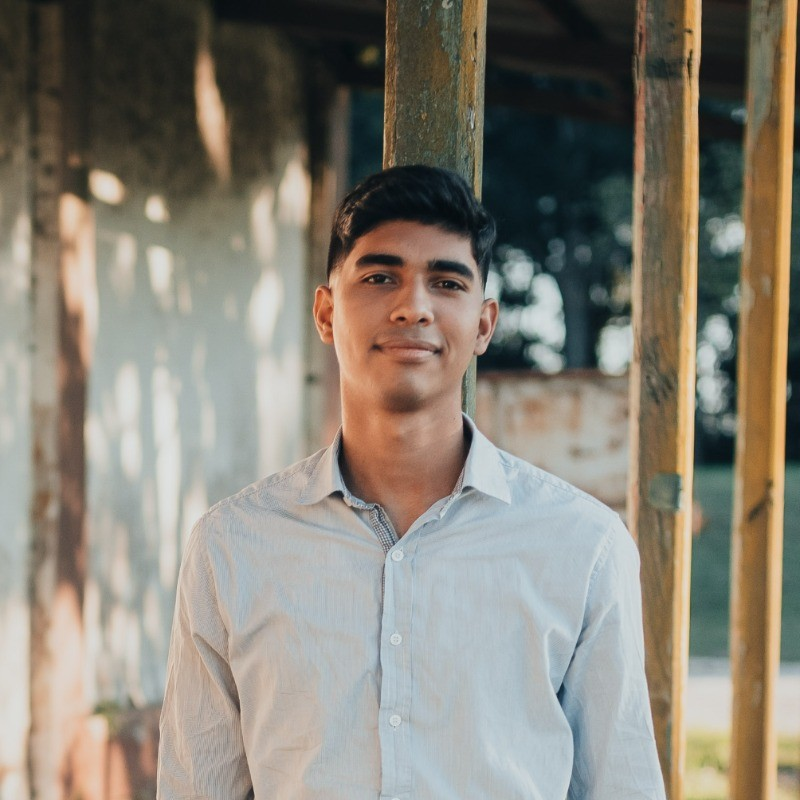

Jesus Madero| WDD 130
Hello, I'm Jesus Madero, a 25-year-old Venezuelan currently residing in Argentina, happily married for two years. I've embarked on an exciting educational journey, completing Pathway Connect worldwide and currently pursuing my studies at BYU Idaho. Over the past year, I've delved into the world of programming, cultivating skills in various languages and honing problem-solving abilities. Pathway Connect has been a significant milestone, and I'm proud of the achievements and projects undertaken during this educational pursuit. Beyond coding, I find balance in life through various hobbies and interests. Rooted in strong values, both personally and professionally, I strive for continuous growth. Looking ahead, my aspirations lie in furthering my programming journey, embracing challenges, and achieving personal development milestones. Today, I'm eager to share my unique journey, filled with dedication, learning, and a passion for coding.